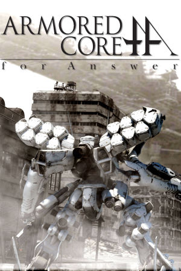

PlayStation 3, Xbox 360
Originally released in Japan on March 19th, 2008, and in North America on September 16th, 2008 for PlayStation 3 and Xbox 360, Armored Core: For Answer is the thirteenth mainline entry in FromSoftware's long-running mech series and the direct sequel to Armored Core 4. The game keeps the fast, boost-heavy combat that Armored Core 4 introduced, with NEXT mechs soaring through ruined cityscapes, and expands it with a dramatic new scale: many missions put you against enormous Arms Forts, gigantic mobile fortresses that must be dismantled piece by piece. Customization remains the heart of the experience, with hundreds of parts for tuning weapons, bodies, generators, and stabilizers across multiple weapon types held in each hand and shoulder.
The story takes place a decade after the National Dismantlement War, with humanity living in vast Cradle platforms high above a polluted surface while the corporate League of Ruling Companies and the independent city-state Line Ark fight over the poisoned ground below. Playing as a mercenary NEXT pilot, players choose allegiances that branch the narrative toward multiple endings, the second installment in the series to feature this. For Answer was praised for its spectacular boss encounters and refined mech-building depth, and it closed out the Armored Core 4 storyline before the series moved on to Armored Core V in 2012. It remains a fan favorite, standing alongside later FromSoftware hits like Demon's Souls and Dark Souls as proof of the studio's range.
FromSoftware
- Official developer website.
Armored Core Wiki
- Contains lots of useful information about Armored Core games.
RPCS3 - The best PS3
emulator.
xenia - The best Xbox 360
emulator.
Armored Core: For Answer Manual (JP, PS3)
- PDF copy of the PS3 manual in Japanese.
Armored Core: For Answer Manual (JP, 360)
- PDF copy of the of the Xbox 360 manual in Japanese.
Steam Grid DB (ACFA) - Contains lots of cool options for artwork that can be used in your Steam library.